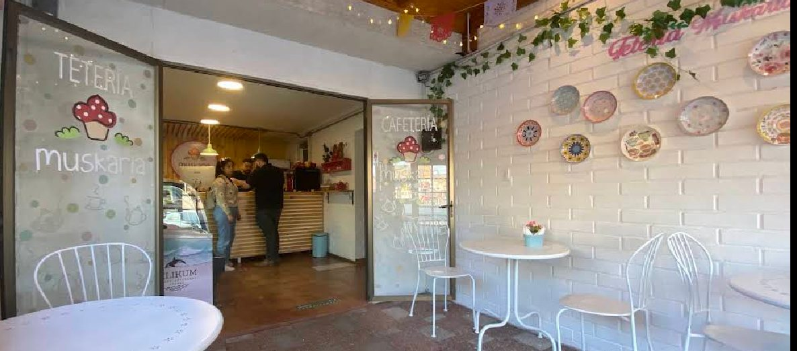
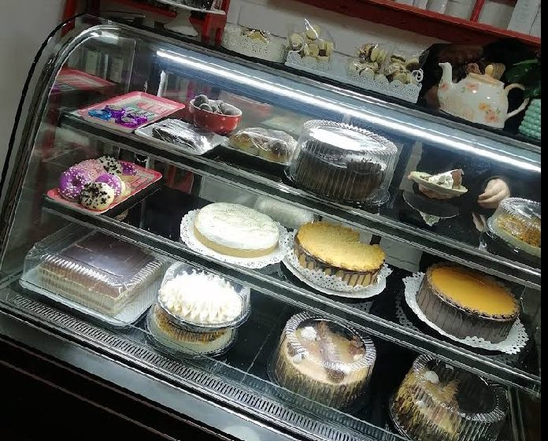
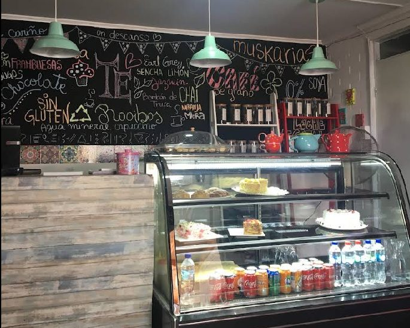
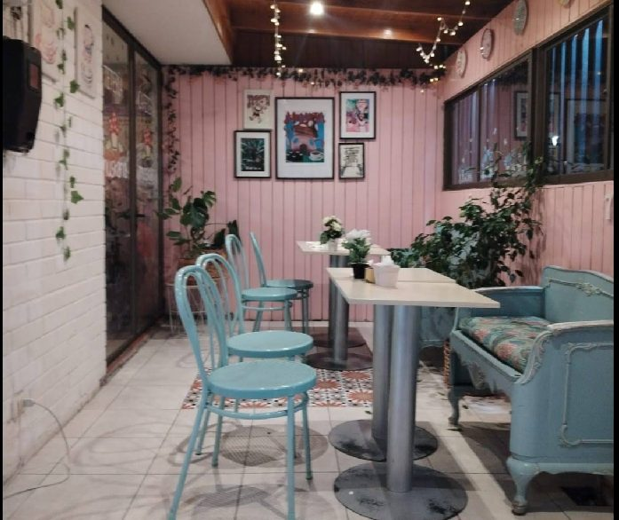
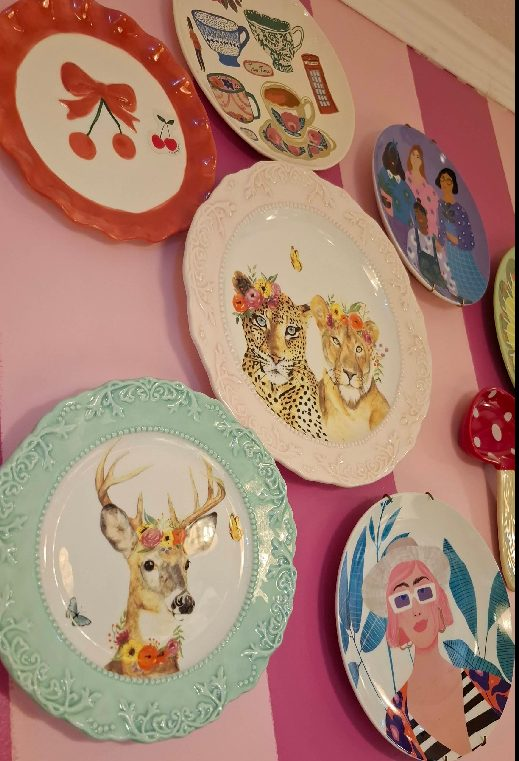

★★★★★
"Excelente atención, la comida y los cafés estuvieron muy ricos, el ambiente y la decoración bastante agradable. Los sándwich se ven bastante bien, sugeriría agregar uno de ciabatta salmón."

De la tostaduría propia al pie de limón, pasando por baclawa y ceregli — con opciones sin azúcar, sin gluten, veganas y sin lactosa en toda la carta.
Tetería Muskaria es un salón de té y cafetería en Parque Central, Maipú, con un rincón de cuento: paredes rosa pastel, sillas menta, guirnaldas de luces y una pared llena de platos decorados, todo bajo la mirada de nuestro pequeño hongo mascota. Café de especialidad de tostaduría propia y una pastelería que se toma en serio la palabra "para todos": líneas completas sin azúcar, sin gluten, veganas y sin lactosa conviven con los clásicos de siempre y con dulces árabes como baclawa, ceregli y fatayer. Su pie de limón es una de las estrellas de la casa, y la hojarasca de manjar y frambuesa con merengue —apta para celíacos— es la otra reina indiscutida.




"Excelente atención, la comida y los cafés estuvieron muy ricos, el ambiente y la decoración bastante agradable. Los sándwich se ven bastante bien, sugeriría agregar uno de ciabatta salmón."
"Un espacio muy agradable, café delicioso y de excelente calidad. Se nota el cariño en el servicio y la dedicación en cada detalle. Recomiendo 10/10 el Latte Coco, una delicia, y en sándwiches recomiendo el Morchella, te lo sirven todo calentito."
"Todo muy rico, la atención increíble, pidan el chocolate espeso, el mejor de todos."
Av. Parque Central Poniente 785, Maipú, Región Metropolitana
Lunes a viernes 8:30 a 21:30h
Sábado y domingo 9:30 a 21:30h